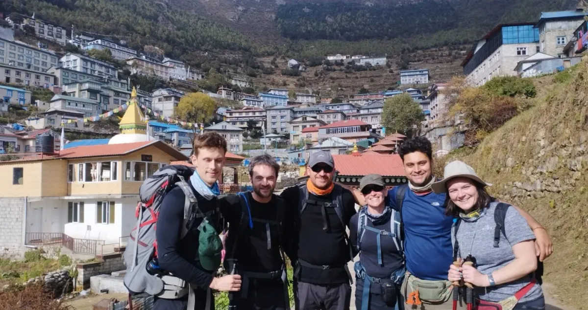
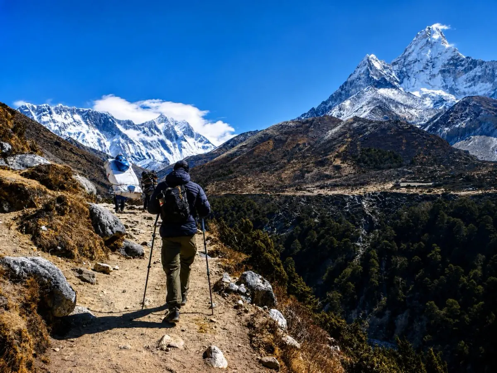
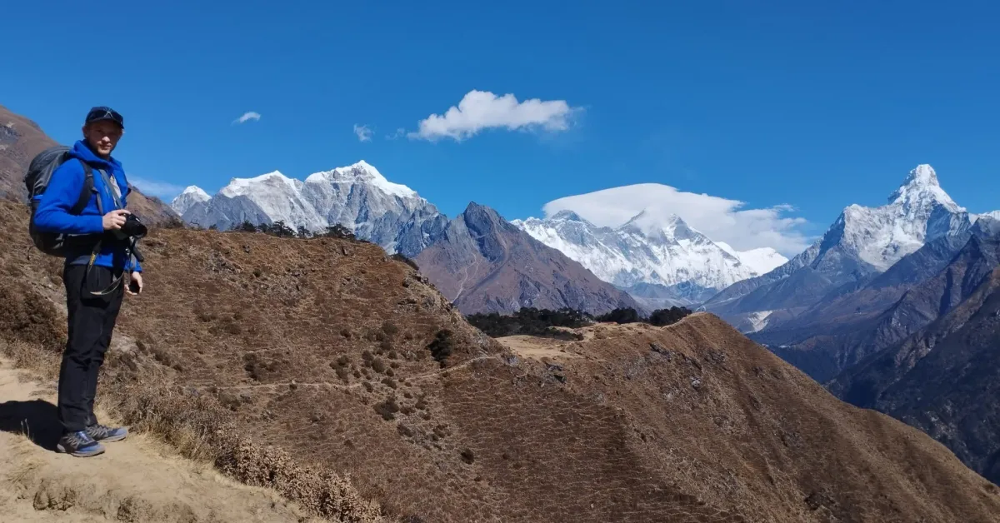
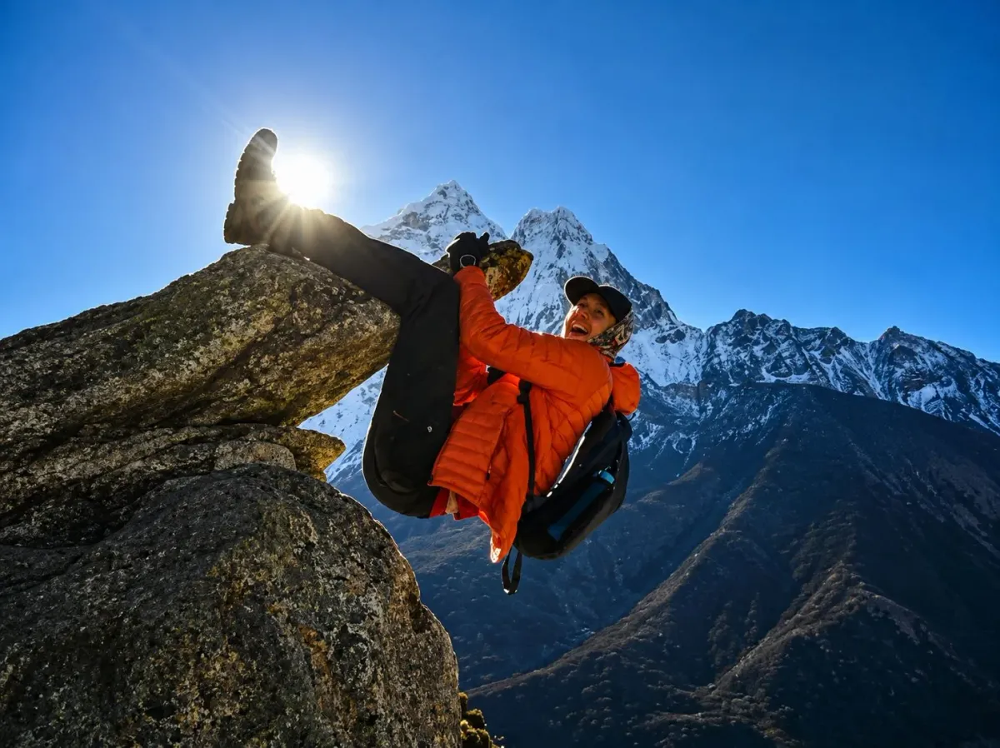

Why Your Everest Base Camp Packing List Matters

Everest Base Camp is one of the few treks where a packing mistake shows up on the trail within days. The walk starts at 2,846 m in Lukla and finishes at 5,364 m at Everest Base Camp, with Kala Patthar reaching 5,545 m. In between, you pass from pine forest and sun-warmed stone steps to frozen moraine and bedrooms where the water in your bottle can freeze overnight. No single outfit works across all of that, which is why a good Everest Base Camp packing list is built around layers you add and remove, not around one heavy item.
The opposite problem is just as common. Overpacking is the habit we see most often when guests arrive in Kathmandu with a full suitcase. Domestic flights to Lukla enforce a 15 kg total limit per passenger, roughly 10 kg for your main duffel and 5 kg for your daypack, and your porter's share of the load is limited too. Every extra sweater is a kilo you either pay for, leave behind in Kathmandu, or carry yourself on the day you can least afford the effort.
This guide is the Everest Base Camp trek packing checklist we walk through with our own trekkers. It covers what to pack for Everest Base Camp item by item, what belongs in your daypack and what belongs in your duffel, what you can rent or buy in Nepal instead of carrying from home, and what to leave behind. It is written for the standard teahouse trek. If you are camping, adding a peak, or following a different route, talk to us first and we will adjust the list.
Pack for the coldest part of the day you will actually spend outside, which is usually an early start above 4,000 m, then check the weight. Any item you cannot picture using at least twice is a candidate to leave behind.
If you are still choosing a route, our Everest Base Camp vs Annapurna Circuit comparison explains how the two treks differ. For the day-by-day plan and what is included in our package, see the Everest Base Camp trek page and its Everest Base Camp itinerary.
Complete Everest Base Camp Packing Checklist
Here is the full list, grouped by category. Essential means we would not start the trek without it. Recommended makes the trek noticeably easier. Optional depends on your habits, your season and your budget. Quantities assume a typical 12 to 14 day teahouse trek in the main spring and autumn seasons; adjust for winter or monsoon using the seasonal notes below. For a printable version with rental notes, see our Nepal trekking equipment checklist.
These are the Everest Base Camp essentials that cover almost every trekker. Each category is explained in the sections that follow.
| Category | Essential | Recommended | Optional |
|---|---|---|---|
| Clothing | 2–3 base-layer tops; 1–2 thermal bottoms; 2 trekking trousers; fleece or mid layer; down or insulated jacket; waterproof jacket and trousers; 3–4 pairs of underwear | 1–2 quick-dry trekking shirts; windproof layer; spare warm layer for evenings | Zip-off trousers; lightweight poncho |
| Head and hands | Warm hat; sun hat or cap; sunglasses with UV protection; liner gloves and warm gloves | Buff or neck gaiter; spare liner gloves | Balaclava; insulated mitts for winter |
| Footwear | Broken-in waterproof trekking boots; 3–4 pairs of trekking socks; camp shoes | 1–2 pairs of warm socks for evenings; blister plasters; gaiters in snow or mud | Spare insoles; spare laces |
| Sleeping | Warm sleeping bag (own or rented) | Sleeping bag liner; dry sleeping clothes; earplugs | Eye mask; leak-proof bottle for use as a hot-water bottle |
| Bags | Soft duffel for the porter; 25–35 L daypack | Daypack rain cover; waterproof dry bags | Packing cubes; small padlock |
| Equipment | Headlamp; two 1 L water bottles; water purification; sunscreen and SPF lip balm | Trekking poles; quick-dry towel; reusable zip bags | Hydration bladder; carabiner; duct tape |
| Health and hygiene | Personal medication; blister and first-aid kit; toilet paper; hand sanitizer; toothbrush and toothpaste | Wet wipes; moisturizer; oral rehydration salts; throat lozenges | Foot powder; insect repellent for the lower trail in monsoon |
| Electronics | Phone; power bank; charging cables | Universal adapter; offline maps; spare camera battery | Camera; e-reader; earphones |
| Documents and money | Passport; insurance details; Nepali rupees in small notes | Paper and digital copies of documents; emergency contact card; passport photos | A card for Kathmandu spending |
Clothing and Layering System

Layering works because temperature on this trek changes by the hour. A morning start near Lobuche can be well below freezing. By noon, in direct sun, you may be down to a T-shirt. By the time you reach the next lodge the cold returns quickly. Instead of one thick garment, you carry several thin ones and adjust: add a layer before you get cold, remove one before you start to sweat. Damp clothing is what turns an uncomfortable day into a risky one at altitude, so managing sweat matters as much as managing cold.
| Layer | What it does | What to bring |
|---|---|---|
| Base layer | Sits against the skin and moves sweat away from it. | 2–3 merino or synthetic tops, 1–2 thermal bottoms. Avoid cotton, which stays wet and cold. |
| Mid layer | Adds warmth you can put on and take off quickly while walking. | A fleece jacket or light insulated pullover. Two options are worth carrying in the colder months. |
| Insulation | Gives serious warmth when you stop: rest breaks, lodge evenings, pre-dawn starts. | A down or synthetic insulated jacket with a hood, large enough to fit over your fleece. |
| Shell | Blocks wind and rain, and traps heat when you need it. | A waterproof, breathable jacket and trousers. Side zips on the trousers let you pull them on over boots. |
Item by Item
On Your Body
- Base-layer tops (2–3): merino or synthetic. Rotate them and wash out one when you can, since lodge laundry is not always practical.
- Trekking shirts (1–2): quick-dry short or long sleeves for the warmer lower trail between Lukla and Namche Bazaar.
- Trekking trousers (2): durable, quick-drying and stretchy. Zip-off legs are optional; zips can chafe.
- Thermal bottoms (1–2): worn under trousers on cold mornings. Keep one set dry for sleeping.
- Fleece or mid layer (1, or 2 in winter): the layer you wear most in the evenings.
- Underwear (3–4): quick-dry, and a supportive sports bra or two if relevant.
- Trekking socks (3–4) and warm socks (1–2): merino blends dry well. Keep the warm pair for the lodge and bed.
Warmth and Weather Protection
- Down jacket: your warmest garment and the one you will use most at altitude. Many operators lend one, so check what your package includes.
- Waterproof and windproof shell: a hooded jacket and trousers. Wind above Dingboche feels colder than the thermometer suggests.
- Rain protection: your shell does the job in the main seasons. In monsoon add a pack cover and consider a poncho.
- Liner gloves and warm gloves: thin gloves for dexterity, insulated gloves or mitts for the cold. Pack a spare liner pair.
- Warm hat: a beanie that covers your ears.
- Sun hat: a brimmed hat or a cap with a neck flap. UV is strong at altitude.
- Buff or neck gaiter: sun, dust and cold air. It also works as a headband or light face cover.
A typical cold morning above Dingboche: base layer and thermal bottoms under trekking trousers, fleece, shell, warm hat and gloves. Forty minutes in, you open the shell and take off the hat. An hour later the fleece goes into the daypack. At lunch, the down jacket goes on before you sit down, not after you start shivering. That rhythm is the whole point of layering, and it only works if the layers are easy to reach. That is why they belong in your daypack, not your duffel.
Cotton T-shirts, jeans and hoodies absorb sweat, dry slowly and pull heat from your body once you stop walking. Leave them at home or in your Kathmandu hotel. The weight saved by quick-dry fabrics is a bonus on top of the warmth.
Footwear

Boots decide how much you enjoy the trek, and they are the one item we ask almost everyone to bring from home. You will walk for roughly six to eight hours on many days, on stone staircases, dusty trail and rough moraine, so fit and break-in matter more than brand.
What to Look For in Trekking Boots
- Fit: try boots on with the socks you plan to hike in, preferably in the afternoon when your feet are slightly larger. Your toes should not touch the front on a downhill, you should have roughly a thumb's width of space ahead of your longest toe, and your heel should stay put.
- Ankle support and sole: mid or high-cut boots with a lugged, reasonably stiff sole cope well with stone steps and loose ground. Trail runners suit some experienced hikers in warm seasons, but they offer less support and warmth.
- Waterproofing and warmth: a waterproof membrane helps in snow, slush and monsoon. For winter, look for a warmer boot and allow room for thicker socks.
- Break-in: wear them on several long hikes, ideally with a loaded daypack, before you fly. New or barely worn boots are the most common cause of avoidable blisters on this trek.
Camp Shoes
- Lightweight trainers, sandals with socks, or insulated booties for the lodge.
- You will wear them for evenings and for night-time bathroom trips, so pick something easy to slip on.
- Keep them light, since they live in your duffel.
Gaiters, When Appropriate
- Usually unnecessary in dry autumn weather.
- Useful in snow (winter and early spring), on muddy monsoon trails, or if grit keeps getting into your boots.
- Light, small and easy to pack if you are unsure.
Blister Prevention
- Break in your boots well before departure and trim your toenails a few days before you fly.
- Use clean, dry socks daily. Some trekkers add a thin liner sock under a merino sock to reduce rubbing.
- Treat hot spots immediately. Stop, take off the boot and apply tape or a blister plaster before a blister forms. Waiting makes it worse.
- Keep feet dry. Change socks at lunch when you can, and air your feet and boots at the lodge.
- Carry a small foot-care kit in your daypack: plasters, tape and scissors for cutting them.
Sleeping Gear

Teahouse rooms are simple: a twin bed with a foam mattress and pillow, thin walls, and usually no heating. The dining room has a stove in the evening, but once you go to bed the room drops to the outside temperature. Lodges often provide blankets, though quantity and quality vary, and relying on them is a gamble at higher altitude.
Why the Sleeping Bag Matters
At Dingboche, Lobuche and Gorak Shep, nights are commonly below freezing, and in winter they are much colder. Cold, poor sleep at altitude makes every following day harder. Most trekkers in spring and autumn are comfortable in a warm down bag, often rated to around −15°C to −20°C, used with a liner. Manufacturers publish several numbers for each bag, so look at the comfort rating rather than the extreme rating, which is a survival figure. If you usually sleep cold, choose a warmer bag. A warm down bag can weigh well over a kilo and a half, which is one reason many people rent one in Nepal instead of carrying their own across the world.
- Sleeping bag: warm, with a hood, and compressible. Rent or bring your own; see what to rent below.
- Sleeping bag liner: adds some warmth, keeps a rented bag clean and is easy to wash. Silk, fleece or thermal liners all work.
- Sleeping clothes: a dry base layer and warm socks reserved only for bed. Never sleep in the clothes you hiked in, which hold moisture.
- Sleeping pad: usually unnecessary on a teahouse trek because beds have foam mattresses. Consider one only if you are camping or want extra insulation.
- Earplugs: walls are thin, and early departures, snoring and wind add up. They are cheap and weigh nothing.
- Eye mask: optional, but helpful if you are sensitive to dawn light or a shared room.
- Hot-water bottle trick: ask the lodge to fill a leak-proof, heat-safe bottle with boiled water and put it in your sleeping bag. Check the lid carefully and expect a small charge.
If you rent a sleeping bag or down jacket, ask to see it before paying. Check that the zip runs smoothly, the down is lofted rather than flat or lumpy, and the item is clean and dry. Your own liner makes a rented bag far more pleasant.
Backpack and Bags

On a standard teahouse trek you use two bags: a soft duffel carried by a porter, and a daypack that stays on your back. The setup keeps your shoulders light and your essentials within reach. The weight limits on the Lukla flight (about 15 kg per person in total, roughly 10 kg for the duffel and 5 kg for the daypack) shape how you pack both. Confirm the current limits with your operator before you buy or pack anything.
- Main trekking duffel: a soft, waterproof duffel of around 70–90 L with lockable zips. Add a name tag and a bright strap, because many duffels look alike at Lukla. Many operators supply a duffel with a porter-supported booking, so check before buying one.
- Daypack: 25–35 L with a padded hip belt, chest strap and side pockets for bottles. Fit matters more than brand, and a pack that is too large only encourages you to fill it.
- Rain cover: a fitted cover protects the pack in rain or wet snow. Also line the inside with a dry bag if you carry electronics and a down jacket.
- Waterproof dry bags: several sizes, ideally colour-coded: one for sleeping gear, one for clothes, one for electronics and documents. They also compress your load.
- Packing cubes: optional, but they keep the duffel organized so you do not unpack everything at every lodge.
- Small personal pouch: for passport, cash, permits and phone. Keep it on you or in the lid pocket of your daypack, never in the duffel.
The next two sections show exactly what belongs in each bag. If you are comparing routes that use different logistics, such as the Everest Base Camp trek without a flight, ask your operator how the baggage rules apply.
Trekking Equipment

This is the Everest Base Camp trekking gear that sits between your clothing and your documents. Only the items that make sense for this particular trek are listed.
- Trekking poles: many trekkers find them useful on long descents and on uneven moraine, where they take load off the knees. Choose a collapsible pair with rubber tips, practise adjusting them before you fly, and pack them in the duffel for the Lukla flight.
- Headlamp: for pre-dawn starts such as Kala Patthar, dim lodge corridors and night-time bathroom trips. Carry spare batteries or a rechargeable model you can top up.
- Water bottles: two wide-mouth 1 L bottles are easy to fill, clean and pack. Single-use plastic bottles are restricted in much of the Khumbu, so reusable bottles are the practical choice.
- Hydration system: a bladder is convenient, but the hose can freeze on cold mornings and leaks inside a bag are a nuisance. Many trekkers prefer bottles, or use a bladder with an insulated hose.
- Sunglasses: good UV protection with side shields. Strong sun at altitude and glare from snow make this a health item, not a fashion one. Carry a spare or a case, and bring spare glasses or lenses if you wear them.
- Sunscreen and lip balm: high-SPF, reapplied often. Do not forget the underside of your nose and chin, where reflected light reaches.
- Water purification: boiled water from lodges, purification tablets, a filter bottle or a UV pen. Cold water slows many tablets down, so follow the instructions and allow extra time.
- Quick-dry towel: a small travel towel dries overnight and takes little space.
- Reusable bags: a few zip bags, a stuff sack for dirty laundry and a rubbish bag. Carry your waste out to a proper bin.
- Multi-use accessories: a few metres of cord, a short length of duct tape wrapped around a pole or bottle, a couple of safety pins and a carabiner for hanging items.
Personal Care and Hygiene
Keep your toiletry kit small, practical and focused on dry, high-altitude air and basic hygiene in shared lodges. Decant products into small containers and leave the full-size bottles in Kathmandu.
| Item | Why you need it |
|---|---|
| Toothbrush and small toothpaste | Basic hygiene. A travel-size tube lasts the whole trek. |
| Soap | A small bar or multi-use biodegradable soap for hands, body and light laundry. |
| Hand sanitizer | Useful before meals and after toilets when washing water is cold or unavailable. |
| Toilet paper or tissues | Toilet paper is not always supplied in lodge toilets. Carry a roll in a zip bag and follow each lodge's instructions on where used paper goes. |
| Wet wipes | A quick wash when a hot shower is not practical. Choose unscented, biodegradable ones where possible and carry used wipes to a bin. |
| Moisturizer and lip balm | The air is very dry and cold. Hands, lips and cheeks suffer first. |
| Sunscreen | Covered in the equipment section, but worth a second check here. |
| Basic personal-care supplies | Nail clippers, a small comb, contact-lens supplies and menstrual products. Bring enough for the whole trek. |
Hot showers are available in many lodges for an extra charge, particularly lower down, but they become colder, slower and more expensive as you climb. Many trekkers settle on wipes and a quick wash above Dingboche. Availability varies by lodge and season.
First Aid and Personal Medication
Our guides are first-aid trained and carry a group kit, but each trekker should still carry a small personal kit for the everyday problems that happen between lodges: blisters, scrapes, headaches, sore throats and upset stomachs.
- Blister care: blister plasters and athletic tape, plus scissors to cut them.
- Wound care: adhesive bandages, a few sterile dressings and antiseptic wipes.
- Pain relief: whatever suits you and your doctor agrees with. Pack it in its original packaging.
- Personal prescription medication: enough for the whole trip plus a few spare days, in original packaging, with a copy of the prescription. Keep it in your daypack, not the duffel.
- Oral rehydration salts: helpful for stomach upsets and general dehydration.
- Throat lozenges: a dry throat and cough are common in the thin, dry air.
- Allergy medication: if you have known allergies, carry what you normally use.
- Stomach and antibiotic medication: only as advised by your doctor or a travel-medicine clinic before you leave.
Altitude Preparation
Nothing in your bag replaces a sensible acclimatization schedule, steady pacing and honest communication with your guide. Whether to carry altitude-related medication is a decision for your own doctor or a travel-medicine clinic well before you fly, not something to improvise in Namche. Learn the early warning signs, such as a persistent headache, nausea, dizziness or unusual breathlessness, and tell your guide at once if you notice them. You can read more on the altitude profile of the Everest Base Camp trek and in our recommended medical kit guide.
Electronics and Accessories

Most lodges have electricity from solar or hydropower, but supply is limited. Charging points are usually in the dining room or reception, typically for a fee per device, and availability can depend on weather and season. Plan as though you will have to ration power and treat any charging or Wi-Fi as a bonus rather than a guarantee.
- Phone: set to airplane mode while walking, lower the screen brightness and turn off automatic uploads.
- Camera: one body and one or two lenses is plenty. Cold shortens battery life, so keep spares in an inner pocket.
- Power bank: 10,000–20,000 mAh covers most trekkers. Airlines require power banks in cabin baggage, so carry it in your daypack.
- Charging cables: short and labelled, ideally one multi-tip cable to save weight.
- Universal adapter: Nepal uses 230 V and a mix of socket types, so a universal adapter is the safe choice.
- Spare batteries where appropriate: for your headlamp and camera if they do not charge by USB.
- Protective case and zip pouch: dust, moisture and knocks are the real hazards.
- Offline maps: download maps and your route over Kathmandu Wi-Fi. GPS works without a data connection.
Keep devices in an inner pocket while walking and in your sleeping bag overnight so the battery stays warm. Leave heavy electronics such as laptops and tablets at home unless you really need them. Mobile coverage and Wi-Fi exist in places but are inconsistent, so tell family not to expect daily contact.
Documents and Money
| Item | What to carry | Notes |
|---|---|---|
| Passport | Valid passport with a Nepal visa | Check the current entry requirements on our Nepal visa guide before you travel. |
| Permits | Sagarmatha National Park permit and Khumbu Pasang Lhamu Rural Municipality permit | Your operator normally arranges these. Keep them accessible, because checkpoints on the trail ask to see them. See the Everest Base Camp trek page for what is included in our package. |
| Travel insurance | Policy number, emergency phone number and a copy of the policy | Confirm that it covers trekking to high altitude and emergency helicopter evacuation. More in our travel insurance guide. |
| Emergency contacts | A written card with next of kin, insurer, operator and embassy numbers | Keep it in your daypack in case your phone dies or is lost. |
| Copies of documents | Paper copies and photos of passport, visa, permits and insurance | Store them separately from the originals, and keep a cloud copy as well. |
| Nepali rupees | Cash in small notes for tea, charging, showers, snacks and tips | Withdraw or exchange in Kathmandu. Do not count on ATMs along the trail, which can be offline or unreliable. |
| Cards | One card for Kathmandu spending and emergencies | Card acceptance on the trail is limited, so carry cash for daily costs. |
Our Everest Base Camp trek page suggests budgeting roughly USD 15 to 25 per day for personal expenses that are not included in the package, such as hot showers, device charging, Wi-Fi, snacks and tips. Add a buffer for anything you want to buy in Namche Bazaar.
For broader planning beyond the trek itself, our Nepal travel guide covers arrival, money and logistics.
What to Keep in Your Daypack
Your daypack holds what you need between breakfast and the next lodge, plus anything you would badly miss if your duffel arrived hours after you did. The duffel travels separately with your porter and may not be accessible until the evening. Prioritize items that need to stay within reach during the trekking day, and keep the total to around 5 kg.
Drink, Snacks and Sun Protection
- Two filled 1 L bottles (and your purification method)
- Snacks: bars, nuts or chocolate. Prices rise with altitude
- Sunglasses in a case
- Sunscreen and SPF lip balm
- Sun hat, warm hat and buff
Layers and Weather
- Fleece or mid layer
- Waterproof and windproof shell
- Down jacket for rest stops and cold stages
- Liner gloves and warm gloves
- Rain cover for the pack
Health and Essentials
- Personal medication and a blister kit
- Toilet paper, tissues and hand sanitizer
- A small rubbish bag
- Headlamp (with spare batteries)
- Hand-held items you use often, like a notebook
Documents, Cash and Tech
- Permits and copies of your passport
- Cash in small notes
- Phone and camera
- Power bank and short cable
- Emergency contact card
What to Pack in Your Main Trekking Bag
The duffel carries everything you only need once you reach the lodge: sleeping gear, spare clothes, toiletries and backup equipment. It rides on a porter's back, often alongside another trekker's bag, so a good duffel is light, waterproof and well organized.
Pack in the Duffel
- Sleeping bag and liner
- Spare base layers, socks and underwear
- Thermal sleeping set and warm socks
- Down jacket, unless you are wearing it
- Camp shoes
- Toiletries and spare first-aid items
- Spare batteries, charging cables and adapter
- Trekking poles during flights
- Laundry bag and spare zip bags
Never Pack in the Duffel
- Passport, permits, cash and insurance details
- Prescription medication
- Camera, phone and power bank
- The layers you will need during the day
- Water bottles and snacks
- Anything you could not replace if your bag arrived late
How to Pack Efficiently
- Set a weight target before you start. Your duffel budget is roughly 10 kg. Aim for about 9 kg so you have room for items you buy or rent in Kathmandu.
- Weigh it at home with a luggage scale, then weigh it again at the end of packing.
- Waterproof everything. Use a heavy-duty liner bag or dry bags inside the duffel. Duffels get rained on, snowed on and dropped.
- Group by use, not by item. One bag for the sleeping system, one for spare clothes, one for toiletries and first aid, one for electronics.
- Put heavy items low and central so the duffel hangs evenly on a porter's back.
- Make a night kit at the top: sleeping clothes, headlamp, toiletries and your liner, so you can find them in a dim lodge.
- Lock the zips with a small padlock and tag the duffel with your name and a bright strap.
Leave anything you will not use on the trek in your Kathmandu hotel. Most hotels and operators will store spare luggage while you are in the mountains, so ask when you book.
What NOT to Pack for Everest Base Camp
Most overpacking comes from pre-trip anxiety and "just in case" thinking. Our guidance is realistic, not absolute: if you know you will use an item every day, it has earned its weight. If you are packing it because you are nervous, it probably has not.
Common Overpacking Mistakes
- Too many clothes: you do not need a fresh outfit for every day. Plan to rewash and rotate.
- Heavy electronics: laptops, tablets and multiple camera bodies add weight and worry.
- Excessive toiletries: full-size bottles, several creams and perfume add up quickly.
- Duplicate equipment: two jackets of the same warmth, or three torches.
- Inappropriate footwear: fashion sneakers, brand-new boots or heavy mountaineering boots you will not need.
- Bulky rarely-used items: hair dryers, full-size towels and thick books.
Other Items to Leave at Home
- Cotton jeans and hoodies: heavy, slow to dry and cold when damp.
- Single-use plastic water bottles: restricted in much of the Khumbu.
- Drones: Nepal has permit requirements and restrictions on drone use, so check current rules before packing one.
- Valuable jewellery: unnecessary on a trek and easy to lose.
- Hard-shell suitcases: use a soft duffel and store the suitcase in Kathmandu.
- Lots of food: snacks are useful, but lodges serve proper meals and sell basics along the way.
| Instead of this | Pack this |
|---|---|
| Cotton T-shirts | Merino or synthetic base layers |
| Jeans | Quick-dry trekking trousers |
| A heavy hoodie | A fleece and a packable down jacket |
| Laptop or tablet | Phone with offline maps, and an e-reader if you want one |
| Full-size toiletry bottles | Travel-size containers and a multi-use soap |
| Disposable plastic bottles | Reusable bottles and purification |
| A hard suitcase | A soft duffel; leave the suitcase in Kathmandu |
| Several pairs of casual shoes | Broken-in boots and one light pair of camp shoes |
What You Can Rent or Buy in Nepal
Kathmandu's Thamel district has many trekking gear shops, Namche Bazaar has a smaller selection, and some operators lend bulky cold-weather items with their packages. Availability, condition and prices vary between shops and seasons, so treat this as a guide to what is commonly possible, not a promise of any particular inventory. Our rental and buying notes on the equipment checklist page go into more detail.
| Item | Rent, buy or bring? | Notes |
|---|---|---|
| Down jacket | Rent or buy | Check the warmth and fit, and that the zips and down loft are in good condition. |
| Sleeping bag | Rent or buy | Bring your own liner for hygiene and warmth. |
| Duffel bag | Often supplied; or rent or buy | Ask your operator what is included before you buy. |
| Trekking poles | Rent or buy | Test the locking mechanism and adjust them before you leave Kathmandu. |
| Trekking boots | Bring your own | Fit and break-in matter. We do not recommend rentals or last-minute purchases. |
| Gloves, hats, buffs and socks | Buy locally if needed | Quality varies. Check seams, insulation and fit before paying. |
| Base layers and thermals | Bring your own | Fit and fabric quality matter more than price. |
| Sunglasses and prescription items | Bring your own | Hard to replace on the trail. |
| Headlamp, batteries, power bank | Basic options in Kathmandu | Prices are higher on the trail, so buy before you go. |
| Water purification tablets | Buy locally or bring | Pharmacies and shops usually stock them. |
Rent It If…
- It is bulky, expensive or only useful on this trip, such as a sleeping bag or heavy down jacket.
- You are short on luggage allowance.
- You can inspect it and test the zips before you pay.
Bring or Buy It If…
- Fit, hygiene or comfort matter: boots, socks, base layers, liners and gloves.
- You will use it again after the trek.
- You need a specific brand, size or prescription.
Many items sold in tourist areas are locally made or unbranded copies. They can be fine for a single trek, but performance varies, so inspect stitching, zips and insulation, and ask about the return process and any deposit. On our trips your guide can help you check gear in Kathmandu before departure, and you should confirm what your package already includes on the Everest Base Camp trek page.
Everest Base Camp Packing Checklist by Season

Weather in the Khumbu varies from year to year and can change quickly, even in the settled seasons. Treat the notes below as starting points, check conditions close to your dates and ask your guide. You can find more on weather on the Everest Base Camp weather section, and our best-time comparison looks at how the seasons compare with the Annapurna Circuit.
| Season | What to expect in general | Pack or adjust |
|---|---|---|
| Spring (March–May) | Warming days with cold nights at altitude. Afternoon cloud and wind are common, and the trail is busy. | Standard four-layer system, sun protection, a buff for dust, a light rain layer and a warm (not extreme) sleeping bag. |
| Summer / monsoon (June–August) | Rain, cloud and slippery trails. Views can be limited and flights to Lukla can be disrupted. | A robust waterproof shell and trousers, pack cover, dry bags, quick-dry clothing, gaiters for mud, spare socks and insect repellent. Build flexibility into your schedule. |
| Autumn (September–November) | Usually clear, settled weather and the best views, with crisp mornings. Nights get colder as November goes on. | The standard system, plus warmer gloves and a hat for late October and November. Sun protection remains essential. |
| Winter (December–February) | Very cold at altitude, with shorter days and snow possible on the trail. Some higher lodges run reduced services. | A warmer sleeping bag, heavier down jacket, insulated gloves or mitts with liners, thermal bottoms, balaclava, hand warmers and gaiters. Ask about traction devices for icy sections and protect your batteries from the cold. |
No season is guaranteed. High-altitude weather can shift within hours, and a clear morning can turn to cloud and wind by afternoon. Pack so you are comfortable in the cold you can reasonably expect, not the best-case forecast.
Minimalist vs. Fully Equipped Packing
There are two reasonable ways to approach the Everest Base Camp packing list. A minimalist approach prioritizes a light load and accepts a few small trade-offs. A fully equipped approach prioritizes comfort and margin for error and uses more of your weight allowance. Both still have to fit within the Lukla flight limits.
| Factor | Minimalist | Fully equipped |
|---|---|---|
| Clothing | Two base-layer tops, rewashed and rotated | Three tops and a spare warm layer |
| Footwear | Boots and one light camp shoe | Boots, camp shoes, gaiters and warm booties |
| Sleeping | Rented bag with a liner | Own warm bag, liner, dedicated sleep set, eye mask and earplugs |
| Electronics | Phone and a power bank | Camera, spare battery, adapter and an e-reader |
| Toiletries and first aid | Basics and wet wipes | Fuller kit and extra comfort items |
| Best suited to | Experienced trekkers in settled seasons who do not mind washing clothes | First-timers, winter trekkers, people who feel the cold and photographers |
| Trade-offs | Less margin if you get wet or the weather turns | More to manage, and closer to the flight weight limit |
Go Minimalist If…
- You have trekked at altitude before and know how your body handles cold.
- You are trekking in a stable season and are happy to rewash clothing.
- You plan to rent bulky items and want the lightest possible daypack.
Go Fully Equipped If…
- This is your first high-altitude trek.
- You are trekking in winter or the shoulder seasons.
- You tend to feel the cold or sleep poorly, or you want camera gear.
Most trekkers end up somewhere in the middle. Start with the full checklist, then remove anything you cannot justify. One note: never economize on warmth, sun protection, a headlamp or first aid. Minimalist should mean fewer duplicates, not fewer essentials. If you are planning something longer or more exposed, such as the Everest Three Passes Trek, lean towards the fully equipped end and talk to us about extra equipment.
Final Everest Packing Checklist
Screenshot or print this before you leave. Tick each item as it goes into a bag, then weigh your duffel and daypack one last time.
Clothing
- 2–3 base-layer tops
- 1–2 thermal bottoms
- 2 trekking trousers
- Fleece or mid layer
- Down or insulated jacket
- Waterproof jacket and trousers
- 3–4 underwear
- 3–4 trekking socks and 1–2 warm socks
- Liner gloves and warm gloves
- Warm hat, sun hat and buff
Footwear and Sleeping
- Broken-in waterproof boots
- Camp shoes
- Blister plasters and tape
- Gaiters if the season needs them
- Sleeping bag (own or rented)
- Sleeping bag liner
- Dry sleeping clothes
- Earplugs
Bags and Equipment
- Duffel with padlock and tag (around 10 kg)
- 25–35 L daypack with rain cover (around 5 kg)
- Waterproof dry bags
- Headlamp and spare batteries
- Two 1 L water bottles and purification
- Trekking poles
- Sunglasses
- Sunscreen and SPF lip balm
- Quick-dry towel
Health and Hygiene
- Personal medication with prescription copy
- Blister and first-aid kit
- Oral rehydration salts
- Toothbrush and toothpaste
- Soap and hand sanitizer
- Toilet paper and tissues
- Wet wipes
- Moisturizer
Electronics
- Phone and charging cables
- Power bank
- Universal adapter
- Camera and spare battery, if bringing one
- Offline maps downloaded
Documents and Money
- Passport and visa
- Permit and insurance details
- Paper and digital copies
- Emergency contact card
- Nepali rupees in small notes
- Passport-size photos
Weigh the duffel (around 10 kg) and the daypack (around 5 kg). Confirm your Lukla flight details with your operator, leave spare luggage in Kathmandu, and check that your travel insurance covers high-altitude trekking.
Frequently Asked Questions: Everest Base Camp Packing
Select a category below to read short, practical answers to the questions trekkers ask most often when packing for Everest Base Camp:
Packing Basics

Ready to Pack for Your Everest Base Camp Trek?
Your gear list is only one part of a good trek. Talk to our Sherpa team about your dates, fitness and what you already own, and we will help you plan the trip and the packing.